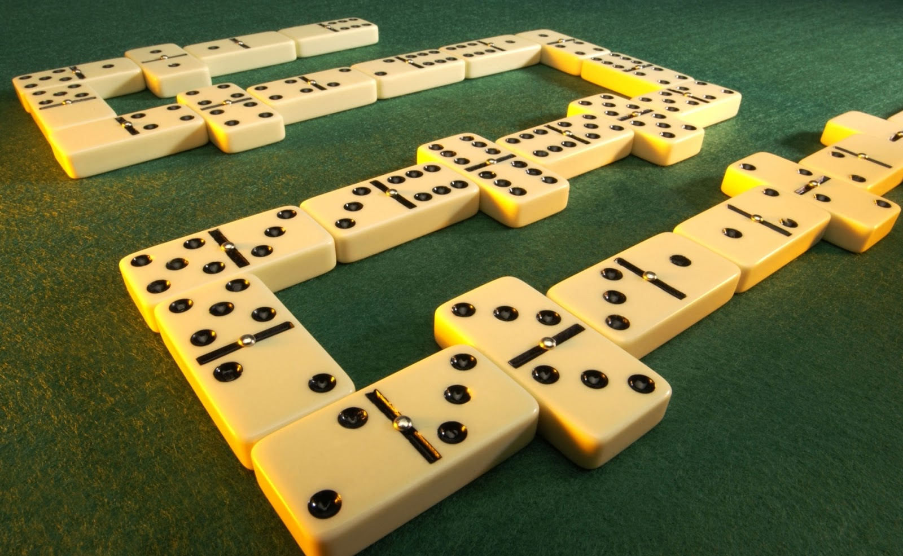
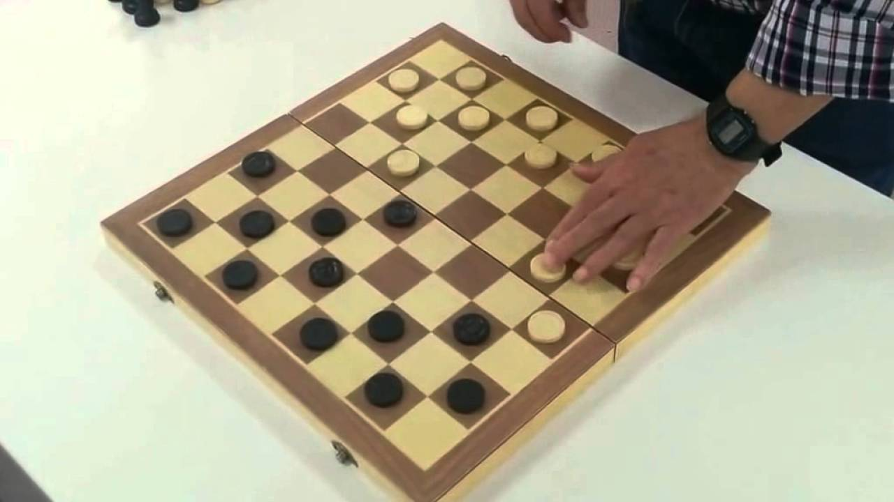

El dominó es un juego de mesa en el que se juegan y emplean unas fichas (baldosas) rectangulares, generalmente blancas por la cara y negras por el envés, usualmente hay de diferentes colores, aunque existen muchas variantes. Una de sus caras está dividida en dos cuadrados, cada uno está numerado normalmente mediante disposiciones de puntos como los dados.
Esta actividad es una de las mejores para convivir y pasar el tiempo analizando como posicionar y como no.

La dama es un juego de mesa para dos jugadores. El juego consiste en mover las piezas en diagonal a través de los cuadros negros (o blancos en algunas variantes) de un tablero de 64 o 100 cuadros. Si alguien no mata (captura), perderá esa pieza al jugar, contrario a la intención obligatoria de capturar (comer) las piezas del jugador contrario, pasando por encima de dichas piezas.
Otra actividad muy entretenida donde no hay horario porque puedes realizarla a la hora que quieras en una buena instalación para que la disfrutes con amigos y familia.
